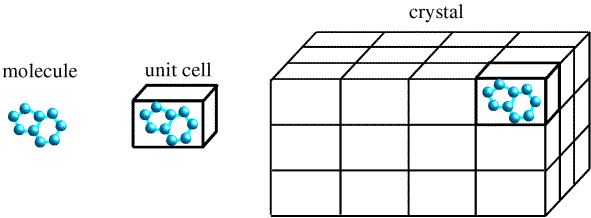
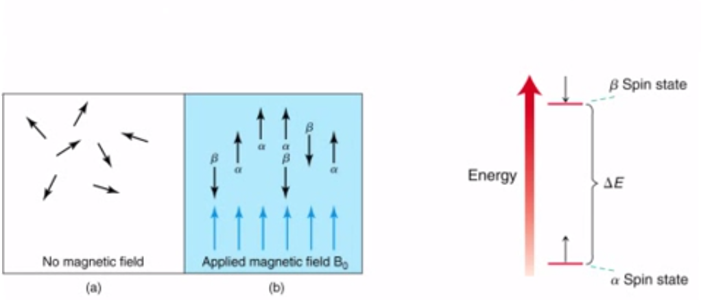
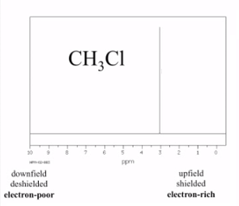
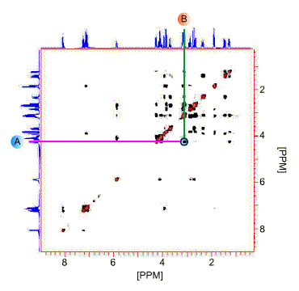
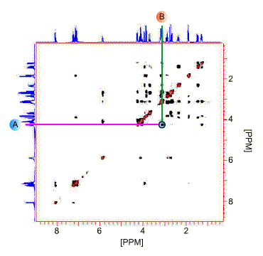
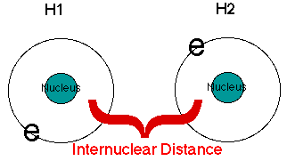
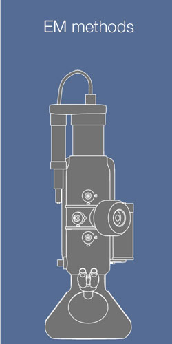
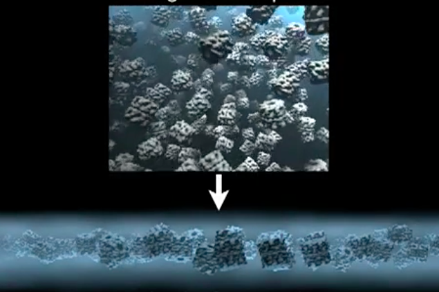
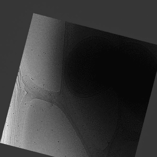
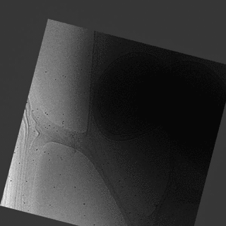

Big Picture
Big Picture
X-ray Crystallography
Detailed X-ray crystallography
Output of X-ray Crystallography
Output of X-ray Crystallography
Why crystal?
Because of the following reasons:
- The diffraction from single molecule would be too weak to measure
- Crystal –an ordered three dimensional array of molecules, magnifies the signal

Pros & Cons of X-ray Crystallography
Pros:
- Highest atomic structure resolution achieved
- We could get the whole 3D structure by the systematic analysis of a good crystallized material
- It does not depend on the number of proteins in the crystal.
Cons:
- Crystallizing a protein is complex and difficult
- Limitation on the types of proteins that can be viewed via x-ray crystallography due to “Missing Coordinate” problem
- Dependency of accuracy of the structure on quality of crystals
Measure of Quality of Structure
Resolution
- Amount of detail that can be extracted from the resulting
structure map
R-Value
- Compares how well the simulated diffraction
pattern matches the experientially observed
diffraction patterns.

Nuclear Magnetic Resonance (NMR)
Structure Determination Process
Structure Determination Process

The Technique

Chemical shift – the underlying phenomena

An example - Ethanol C2H6O
An example - Ethanol C2H6O
An example - Ethanol C2H6O
Protein NMR
Measuring internuclear distances
 
Measure of Quality of Structure
Root Mean Square Derivation
- RMSDs of 0.7 A are considered good
- RMSDs above 1.0 A are not acceptable
Internuclear Distances
- The more internuclear distances measured, the better

Cryo-electron microscopy
Cryo-EM methods use transmission electron microscopy
(TEM) to generate images of speciments
(TEM) to generate images of speciments
EM methods
- Single particle cryo-EM
- cryo-EM Tomography

Transmission electron microscopy
Challenges of biological samples
Problems:
- Biological samples are instable in vacuum
- Image noise due to similar scattering
- Very radiation sensitive
Solution: Vitrification

- Rapidly freezing speciment in liquid
nitrogen - Water has no time to form ice crystals
Overview: Single particle cryo-EM
Overview: Single particle cryo-EM
Overview: Single particle cryo-EM
Overview: Single particle cryo-EM
Overview: Single particle cryo-EM
Overview: Single particle cryo-EM
Overview: Single particle cryo-EM
Overview: Single particle cryo-EM
Overview: Cryo-EM Tomography
 

Pros & Cons of cryo-EM
Pros:
- Possible to analyze complex molecules
- Images can be timed, which allows visualization of molecular processes
- Can be used in combination of x-ray crystallography data to gain additional insights
Cons:

- Lowest resolution compared to NMR and X-ray. We can't see immediately atomic details
- Hard to find the orientation/tilt of an object based on image
<Thank You!>
Questions?